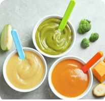

Menu Makanan Sehat dan Bergizi Seimbang untuk Balita
Makanan yang dapat dikatakan sehat dan bergizi seimbang terdiri dari lima kelompok makanan utama. Setiap kelompok memiliki beragam zat gizi penting, termasuk vitamin dan mineral.